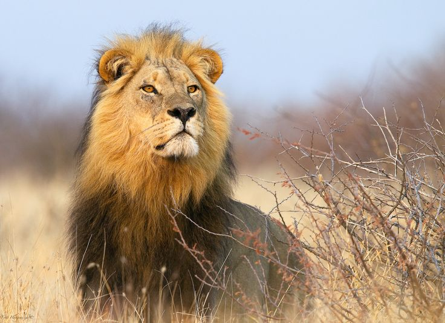

Zimbabwe is a country heavily affected by poaching and they are trying to stop it.
Zimbabwe is located in Africa, Poaching has been an issue ever since private property was added, because poaching is killing or trapping on private property or where it is prohibited. Poaching has become an issue because it is making many animals go on the verge of extinction. This has impacted the country economically in many ways, for the people who poach, they can make huge amounts of money selling valuable parts such as horns. But for the government they are constantly spending money to try to stop poaching. This can impact the environment very negatively, if and when poaching makes certain animals go extinct, it could upset entire food chains and some animals may overpopulate messing up the ecosystem. Poaching could impact Zimbabwe by making people unhappy because all of these animals are dying just for money, it could cause riots and protests to end poaching.